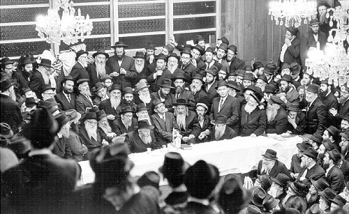

The Rebbe Invited US for Tishrei, All Expenses Paid
R’ Shlomo Raskin reminisces about Tishrei with the Rebbe.
Prepared for publication by Mordechai Gorelick

“I will never forget Tishrei 5728/1967 all my life,” began R’ Shlomo Raskin.
Just one half year prior to that, on Purim Katan, three months before the outbreak of the Six Day War, he had arrived with his parents, his brother and sisters in Kfar Chabad and now, in the first half of Elul, the Rebbe told the Vaad in Kfar Chabad that he was inviting all the new immigrants from Russia to stay with him for Tishrei, on his account! This was announced by letter:
B”H
Yom Gimmel, the day when “ki tov” was doubled
Parshas Ki Seitzei [7 Elul] 5727
Vaad HaRuchni of Kfar Chabad …
Greetings,
My request – for them to be the planners and organizers; that those residents of Kfar Chabad who came from our former country during this Hakhel year, and they are twenty and above and have not yet visited here and did not prostrate at the gravesite of the Rebbe, my father-in-law, and would like to-
To invite them in my name to visit here for the upcoming month of Tishrei, to prostrate at the grave of the Rebbe, my father-in-law, and for all of us to daven together as one in the shul of the Rebbe, my father-in-law, to learn Nigleh and Chassidus in his beis midrash.
Obviously, all that applies only if their trip will not diminish from the mosdos and their affairs in Eretz Yisroel in general and Kfar Chabad in particular.
The trip is conditional on returning to Kfar Chabad.
As for those who are married, the trip must be made with the full consent of their wives.
P.S. It is understood that the expenses of the trip is not the concern of the travelers and will be arranged on their behalf, with G-d’s help. Due to the brief amount of time, surely they will rush to arrange all this, firstly – compiling a detailed list and sending it here by express mail. Thank you ahead of time for the efforts made in this.
R’ Raskin:
“In this letter, the Rebbe wrote that his invitation pertained just to those over the age of twenty. My brother Yehoshua was 19 and he planned on celebrating his twentieth birthday in Tishrei. He asked whether he could be considered 20 already for the purposes of the trip and the answer was yes.
“I am a year younger than him and would only be 20 the following Tishrei, 5729, but I asked anyway – through R’ Efraim Wolf a”h – whether I could go too, since in Tishrei 5728 I would be entering my twentieth year. A few days later, I received a reply saying I would receive half of the cost of the trip. With real mesirus nefesh, my father agreed to pay for the other half, which was a large sum in those days, especially for a new immigrant.”
The visit to the Rebbe for Tishrei is etched deeply in R’ Raskin’s mind and heart and fueled the fire of his hiskashrus to the Rebbe.
“We merited unusual kiruvim from the Rebbe. At the t’kios on Rosh HaShana, the Rebbe asked that all the new immigrants come and stand on the bima. The bima wasn’t that big, and it was simply impossible for everyone to stand there, but the Rebbe asked that an announcement be made that he would not start t’kios until the last of the immigrants was on the bima. I remember that the young ones in the group hung by their hands like clusters of grapes on the bima while the older Chassidim stood next to the Rebbe.
“The same was true for the davening. The Rebbe asked that we stand in the front row. The older Chassidim sat on the first bench, while the young ones squeezed in and stood between the chazzan’s lectern and the Rebbe’s. A chain was put up there to prevent the Rebbe from being jostled.
“At the farbrengens we stood on the farbrengen bima, as close as possible to the Rebbe, as you can see in the picture that was taken by a gentile photographer and published in The New York Times.
“We were moved and shaken by the power of the experience, but while the locals and the regulars saw immediately that this was special, we only realized years later, after we saw how the Rebbe did things over decades, how the Rebbe treated us so very unusually.
“I think that this unusual regard for us was not merely to express the Rebbe’s respect for those who had suffered under communism, but it was as though the Rebbe was addressing heaven and saying – see these G-d fearing Jews who left Russia; so that there would be a continuation … especially as this was after the Six Day War, following which, the Iron Curtain was closed for several years.”
R’ Raskin tells about his first encounter with the Rebbe:
“When I saw the Rebbe for the first time, it struck me that the Rebbe is the leader of the world. The entire world is on his shoulders. The Rebbe’s entire manner and all his actions seemed to broadcast this reality.
“Later, when I heard how every sicha and maamer of the Rebbe ended with a promise, a wish and a burning desire for the Geula and the coming of Moshiach, I saw how the leader of the world placed the topic of Geula front and center. That completely changed my attitude towards Moshiach. Before I came to the Rebbe, it was impossible to know this. It was only when you were with the Rebbe for a month and heard the topic of Geula mentioned hundreds of times with such force that it got to you.”
THE REBBE PROPHESIES ABOUT THE JEWS OF RUSSIA
The new immigrants who left Russia that year and went to Eretz Yisroel were invited for Tishrei to the Rebbe. In the group were: R’ Avrohom Shmuel Lebenhartz, R’ Mulke Gurewitz, R’ Mottel Gorodetzky, R’ Moshe Goldschmid, R’ Nosson Bronstein, R’ Yona Lebenhartz, R’ Dovid Skolnik, R’ Moshe Greenberg, R’ Moshe Scheiner, R’ Mottel Chazan, R’ Shmuel Chaim Frankel, and many others.
It was only natural that right after leaving Russia, they had a tremendous desire to see the Rebbe. The first one to go was R’ Naftali Estulin. He found it hard to accept a situation in which it was possible to see the Rebbe and yet, one stayed at a distance. Since he did not have a family yet, he quickly arranged his papers and spent Tishrei 5727 with the Rebbe.
At one of the first farbrengens he attended, he merited special attention from the Rebbe. It was at the 6 Tishrei farbrengen when the Rebbe suddenly said, “The older Chassid (R’ Berke Chein) and the younger Chassid (R’ Naftali) should say l’chaim.”
That month, the Rebbe referred a number of times to the Jews who still remained in Russia, as in the meantime only a small group had been able to leave. At that 6 Tishrei farbrengen, the Rebbe spoke at length about the promise, “the wicked government will be removed from the land,” and the Jews of the Soviet Union being allowed to leave. This was open prophecy.
In the bracha after Mincha on Erev Yom Kippur, the Rebbe said that soon the gates of the Soviet Union would be opened and masses of Jews would be able to leave.
Beis Moshiach. "The Rebbe Invited US for Tishrei, All Expenses Paid." Beis Moshiach, no. 851 (September 28, 2012).